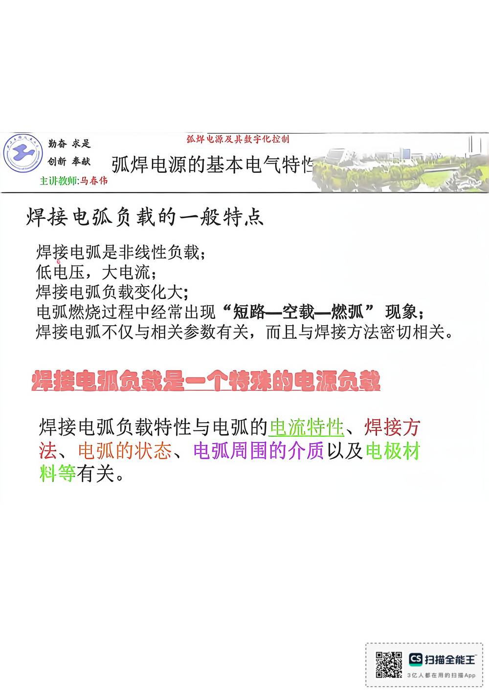

13 手写笔记/1~5周/h-w1-008 弧焊电源基本电气特性
h-w1-008 弧焊电源基本电气特性
📷 原图：
1~5周 焊接电源(1).pdf第 8 页（整页扫描，本库内嵌h-w1-008.jpg）
弧焊电源基本电气特性

本页文字（OCR 整理）
- 弧焊电源基本电气特性
- 焊接电弧负载一般特点
- 焊接电弧是非线性负载；
- 低电压，大电流；
- 焊接电弧负载变化大；
- 电弧燃烧过程中经常出现“短路一空载—燃弧”现象；
- 焊接电弧不仅与相关参数有关，而且与焊接方法密切相关。
- 焊接电弧负载是一个特殊的电源负载
- 焊接电弧负载特性与电弧的电流特性、焊接方
- 法、电弧的状态、电弧周围的介质以及电极材
- 料等有关。
本页重点（自动标记：含"定义/特点/要求/结论/公式"等，或与课件原句高度一致）
- 焊接电弧负载一般特点
- 焊接电弧负载特性与电弧的电流特性、焊接方
OCR 说明
文字由 macOS Vision 识别手写体/翻拍页面得到，错字难免（如"弧"误识为"孤"）；重点标记据此推断，请以页图为准。
对应讲义页
关联
- ← 上一页 · 总览 · 下一页 →
- 讲义：00 第2章 基本电气特性 导航 · 概念：04 概念地图